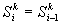
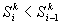

Online Addendum to:
Ideker, T., Ozier, O., Schwikowski, B., and Siegel, A. F., (2002). Discovering regulatory and signaling circuits in molecular interaction networks, ISMB 2002.
Finding the maximal scoring connected subgraph is NP-hard PROOF
Tracking more than one high-scoring component during simulated annealing.
Although the current molecular interaction network is large, it clearly contains only a fraction of all interactions important for the control of gene expression and propagation of expression change. It is therefore doubtful that the annealing procedure will identify a single subnet connecting together all genes with significant expression changes. Rather, we expect the network to contain several, perhaps many, subnets with high score. One way to identify these subnets would be to perform multiple annealing runs. Alternately, the annealing approach may be extended to maintain and improve up to M subnetworks simultaneously: find and score the components of Gw as above, but maintain all of the top M component scores in the graph state vector S=(S1, S2, …, SM). In step (5) of the annealing algorithm presented in the ISMB 2002 paper, recursively examine component scores SkÎS beginning with the top score S1:
If  Accept the change
and begin the next iteration of annealing.
Accept the change
and begin the next iteration of annealing.
If  Recursively examine the next score Sk+1
in the sequence.
If  Recursively
examine the next score Sk+1 with probability  ; otherwise reject the change in graph state and begin the
next iteration of annealing.
; otherwise reject the change in graph state and begin the
next iteration of annealing.
This procedure improves M scores simultaneously but still maximizes the highest score S1: at temperature T=0, lower ranking scores are only examined if S1 is not affected. Moreover, maintaining multiple components increases the efficiency of annealing because changing the state of Gw may cause a number of small components with low score to merge into a single high-scoring component.